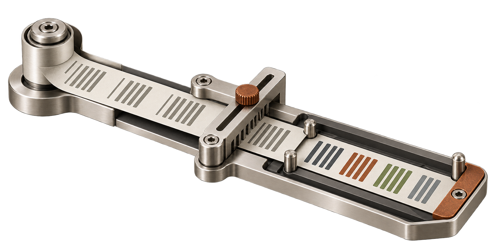
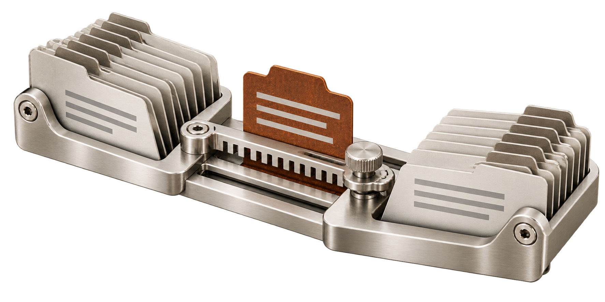
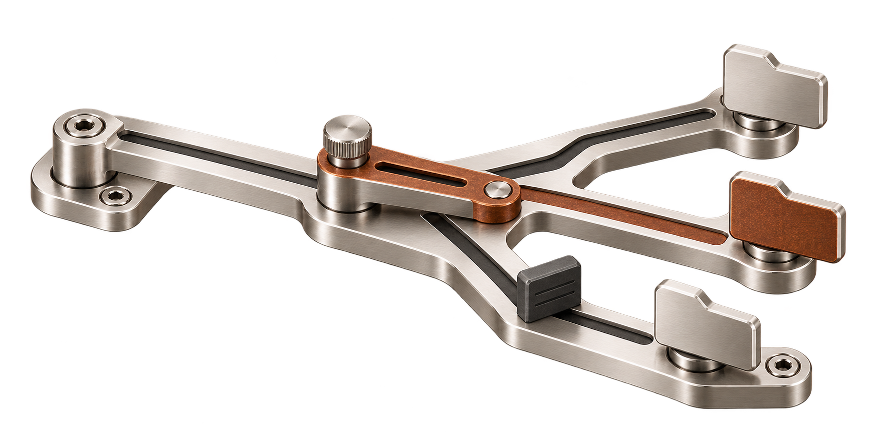
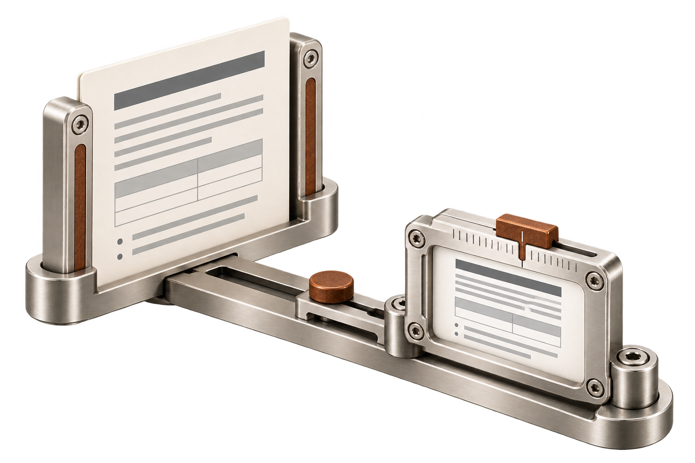

Five more engines.
One warm family.
A meaningful mechanical graphic, a rendered icon with real favicon exports, and a complete homepage for each engine. The approved narrow introductory margin, warm paper, matte pewter and oxide continue throughout.
Current HTML designs: Ferramenta and all seven engines

Ferriki
A syntax highlighter
Token and theme register
Token groups pass through a theme register; the same source receives meaningful colors.



Ferrolex
A spell checker
Wordform proofing gauge
A wordform fits a dictionary profile; a keyed affix slot makes language rules visible.


Ferrocat
A translation catalog engine
Catalog alignment collator
Indexed catalog leaves align by message identity; one edited leaf is retained.



Ferralk
A glob matcher and file walker
Branch-selecting path gate
A pattern gate selects a branch before the stopped subtree is visited.



Ferrugo
A PDF preview renderer
Bounded document preview aperture
A source page becomes a smaller preview inside an explicit aperture boundary.
